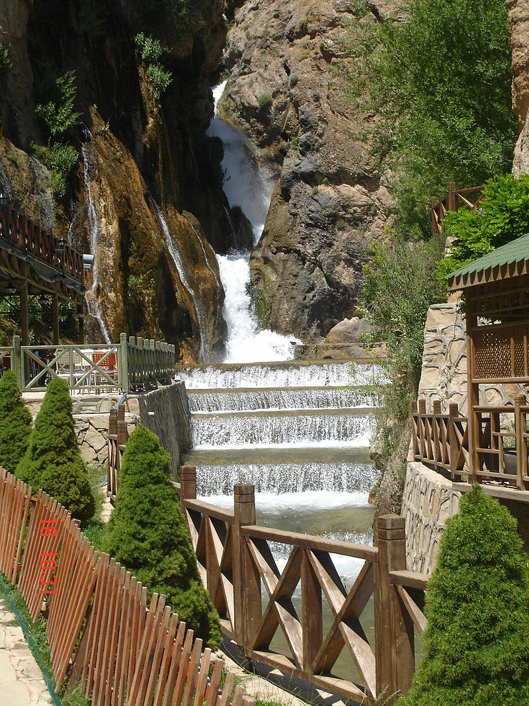
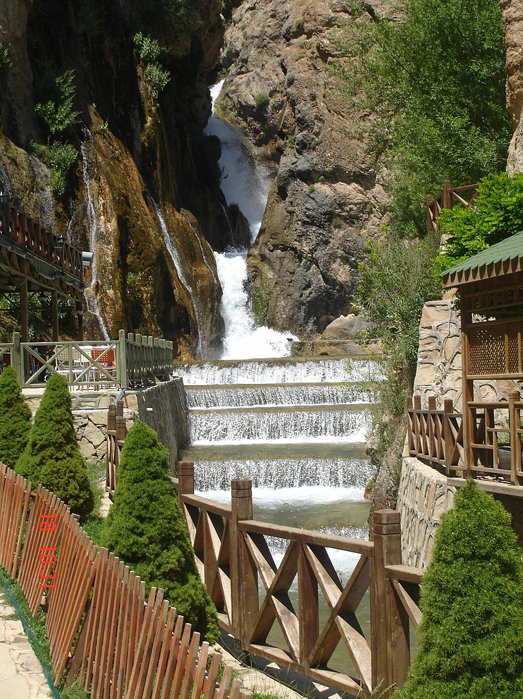

Somuncu Baba
Malatya, doğasıyla, tarihiyle, kültürüyle eşsiz bir şehirdir. Doğal güzellikleriyle ünlü, tarihi mirasıyla zengin bir şehirdir.
Somuncu Baba, Malatya'nın önemli kültürel miraslarından biridir. Onun izleri şehirde hala yaşamaktadır.
Somuncu Baba Türbesi, Somuncu Baba Camii ve Balıklı Göl ile bir arada bulunur. Türbenin yapım tarihine ait bilgi bulunmamakla
birlikte caminin minaresi 1686 tarihlidir. Caminin ortasında türbe bulunmakta ve onun içerisinde de Cumhuriyet devri
ahşap işçiliği ile yapılmış bir sanduka yer almaktadır. Türbeyi içinde muhafaza eden Şeyh Hamit-i Veli Zaviyesi’ne ait olan
yerine bugünkü taş ve ahşap malzemeden inşa edilen cami yapılmıştır. Caminin güney yönünde, bugün kütüphane olarak
kullanılan dikdörtgen bir oda vardır. Türbe içinde taş mimarili kabirler bulunmaktadır. Ayrıca caminin bodrum katında,
Somuncu Baba Müzesi bulunmaktadır.


Orduzu Çınar Ağacı
Battalgazi’nin Çınarı olarak bilinen çınar ağacı Malatya’ya 7 kilometre uzaklıkta Orduzu Beldesi’nde yer almaktadır. Ağacın gövde
kalınlığı 7.20 metre olarak ölçülmüştür. Boyu yaklaşık 15 m olan yaşlı ağacın gerçek yaşı kesin olarak bilinmemekle birlikte, zamanla
içi boşalan ağacın ana gövdeden iki dala ayrıldığı görülmüştür. Dalların gövde sürgününden büyümüş 8–10 metre boyunda yan dalları
mevcuttur. Ağacın kök kısmı taş bir duvar örülerek sağlamlaştırılmıştır. Rivayete göre 8'inci yüzyılda yaşadığına inanılan Battalgazi,
hayvanlarını buraya sulamaya getirmiş; suladıktan sonra elindeki çınar çubuğunu suyun kenarına dikmiş ve o çubuktan da
bugünkü çınar ağacı yetişmiştir.

İstanbulluoğlu Konağı
Konak, Malatya şehir merkezindedir. Taş temelli ve iki katlı olan yapı, kerpiçle inşa edilmiş, ancak çıkmalar ahşap dolgu olarak
yapılmıştır. Yapıya cadde yönünde çift kanatlı ve ahşap kaş kemerli aynalığı olan kapıdan girilir. Birinci katta bir salon
dört oda; ikinci katta da bir salon, dört oda yer alır. Konak, üst katındaki çıkmaları ve çıkmaların arasında kalan boşluklarıyla
çok yönlü bir güzellik kazanmıştır. Yapı, şemsiye çatılıdır. Bozulan çatı nedeniyle su alan beden duvarları ve bazı odaların
döşemeleri çökmüş. Kullanılmaz hale gelen ve yıkılma tehlikesiyle karşı karşıya kalan konak, nihayet çöken arka duvarı
ve döşemeleri askıya alınarak restore edilmiştir.


Günpınar Şelalesi
Suyu kaynağından üç kademe halinde yaklaşık 40 metre yükseklikten dökülmektedir. Şelalenin sol tarafında ana dereden bağımsız
gelen kaynak suyu, kış mevsiminde donarak şelaleyi adeta Pamukkale’ye benzetir. Şelalenin çevresinde yeme-içme tesisleri de
bulunmaktadır. Ayrıca suyun kaynağına doğru 1,5 kilometre kadar yürüyüş imkânı vardır.
 

Atatürkevi Müzesi
Binanın temelleri 1926 yılında atılmıştır. Yapıldığı ilk yıllarda Türk Ocağı olarak kullanılan bina sonraları Cumhuriyet Halk Fırkası
il merkezi ve Halk Evi olarak kullanılmıştır. Bir dönem Malatya Lisesi’nin ek binası, günümüzde ise Atatürk Anı Evi ve Etnografya
Müzesi olarak işlevini sürdürmektedir. Tarihi bina I. Ulusal Mimarlık akımının etkileriyle bodrum ve zemin kat olarak tasarlanmış düzgün
kesme taş ile inşa edilmiştir. Malatya’da I. Ulusal Mimarlık akımının etkileriyle yapılmış ender binalardandır.Müzede,
Mustafa Kemal Atatürk’ün yurt gezileri kapsamında çeşitli vilayetlerde ve Malatya’da çekilmiş fotoğraflarının sergilendiği oda,
Malatya ziyareti sırasında şehrin ileri gelenleri ile yapmış olduğu toplantının temsili odası, Ayrıca I. Dünya Savaşı’nda şehit düşmüş
Malatyalılar anısına hazırlanan teşhir salonu ve Atatürk’ün vefatını konu alan fotoğraflarının sergilendiği oda yer almaktadır.
Ayrıca el dokuması halıların bulunduğu ve çeşitli etnografik eserlerin sergilendiği hol ziyaretçilerin beğenisine sunulmuştur.


İnönü Müzesi
Malatyalı devlet adamı, asker, 2. cumhurbaşkanı ve eski başbakanlardan İsmet İnönü anısına düzenlenmiş müze, İnönü Üniversitesi
rektörlük binası giriş katında yer almaktadır. Müzede İnönü’ye ait özel eşyalar, fotoğraflar ve belgelerden oluşan koleksiyon
sergilenmektedir.